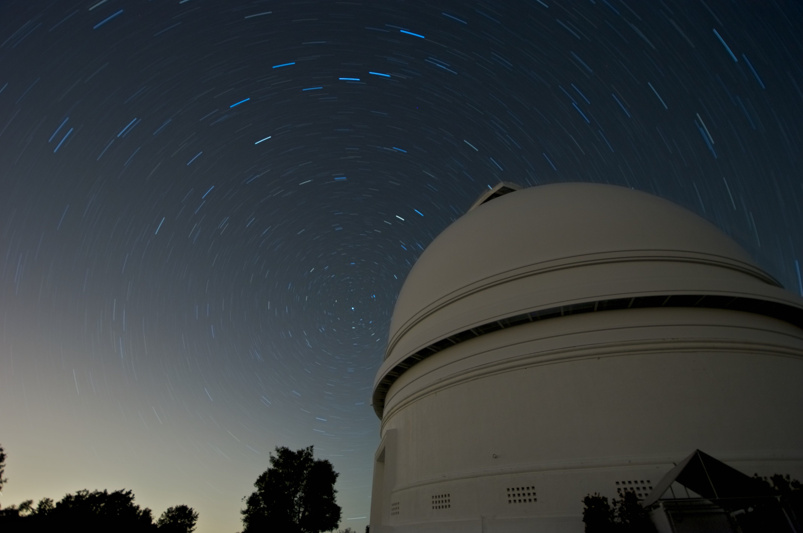

Astron 300: Astronomy I
Fall 2010, David Kaplan
Lectures:
MWF 10:00am-10:50am, Physics 232
Attendance and participation at lectures is required.
Lecturer: Prof. David Kaplan
- Office: Physics 480
- Office hours: Monday 11am or by appointment
- Email: kaplan@uwm.edu
- Phone: 414-229-4971
Course Description: This is a
general course intended to introduce
quantitative astronomy and astrophysics to students with a
physical-sciences background. A background in calculus-based
physics is required. This semester introduces basic concepts in
astronomy and astrophysics including:
- Astronomical coordinates
- Celestial mechanics
- The nature of light and its interaction with matter
- The structure and evolution of single stars
- The evolution of binary stars
- The end-products of stellar evolution
- The following semester (Astron 320) will extend this discussion
beyond
the Milky Way.
Course Website: http://www.lsc-group.uwm.edu/~kaplan/astron300_fall2010.html
Lecture notes, reading assignments, and problem sets will be posted
there.
Course Textbook:
An Introduction to Modern
Astrophysics, 2nd edition, by B. W. Carroll
& D. A. Ostlie (Addison-Wesley, 2006)
Evaluation:
- Problem sets (weekly): 50%; grade will be best 10 of 11 problem
sets
- Midterm exam: 20%
- Final exam: 30%
- You are encouraged to discuss the problem sets with each other
but are
not allowed to copy each other.
- The mid-term will be an in-class,
open-book exam of 1 hour duration.
- The final exam (Thur, 12/16,
10am-noon) will be a closed-book exam of 2 hours duration (only
calculator allowed).
Prerequisites: basic physics
& calculus (Physics 210) or by
discussion.
News:
- Wed, Sep 8 will be a planetarium lecture. Meet outside
(across from Physics 137) at or slightly before 10am. If you are late, you will be
locked out!
Handouts:
- Syllabus (Sep 3,
2010)
- Problem Set 1 (Sep 8
2010, due Sep 15 2010)
- Palomar
star-trail image (click for a larger image)

- Problem Set 2 (Sep 15
2010, due Sep 22 2010)
- Problem Set 3 (Sep 22
2010, due Sep 29 2010)
- Problem Set 4 (Sep 29
2010, due Oct 6 2010)
- Problem Set 5 (Oct 6
2010, due Oct 13 2010)
- Problem Set 6 (Oct 15
2010, due Oct 20 2010)
- Problem Set 7 (Oct 20
2010, due Oct 27 2010)
- Star formation notes
- Problem Set 8 (Nov 10
2010, due Nov 17 2010)
- Solar
System Overview notes (courtesy M. van Kerkwijk)
- Problem Set 9 (Nov 17
2010, due Nov 24 2010)
- Problem Set 10 (Nov 29
2010, due Dec 8 2010)
- Special
Lecture on LIGO (2010-12-08, R. O'Shaughnessy)
- Special Lecture on
IceCube (2010-12-10, B. Hughey)
- Special Lecture on
Colliding BH/NS Systems (2010-12-10, B. Stephens)